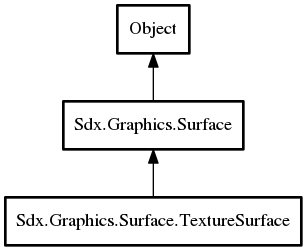

TextureSurface
Object Hierarchy:

Description:
public class TextureSurface :
Surface
Texture Surface
a parent for TextureRegions an externally owned/cached surface
Content:
Creation methods:
Methods:
- public void SetFilter (int minFilter, int magFilter)
- public void SetWrap (int u, int v)
Inherited Members:
All known members inherited from class Sdx.Graphics.Surface